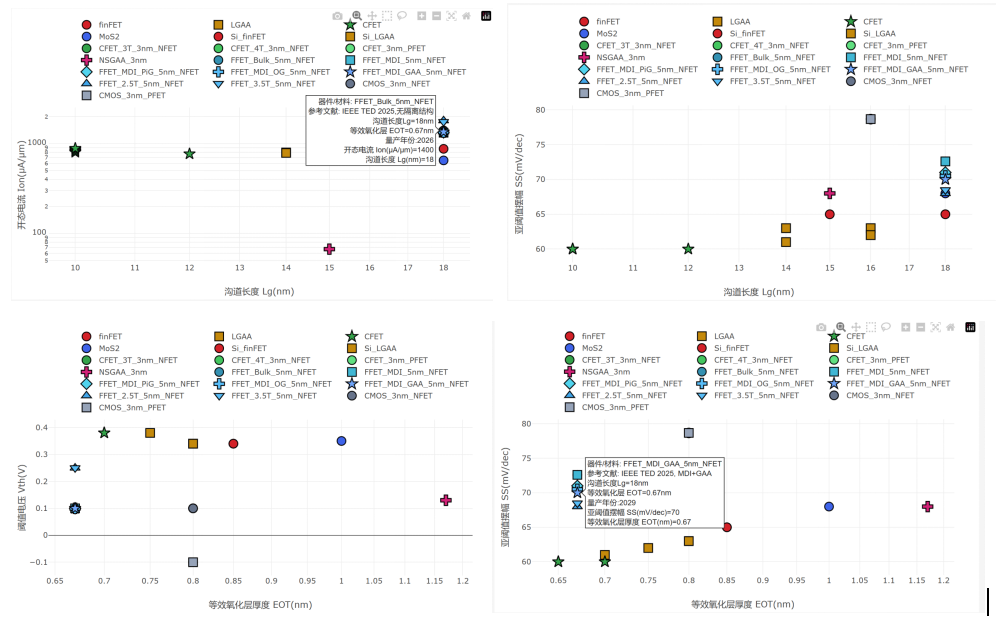
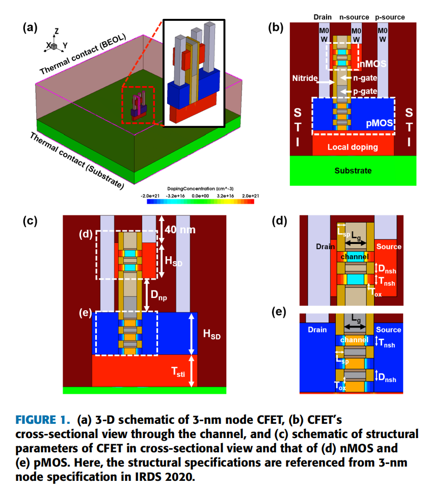
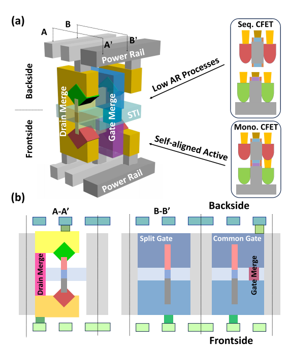
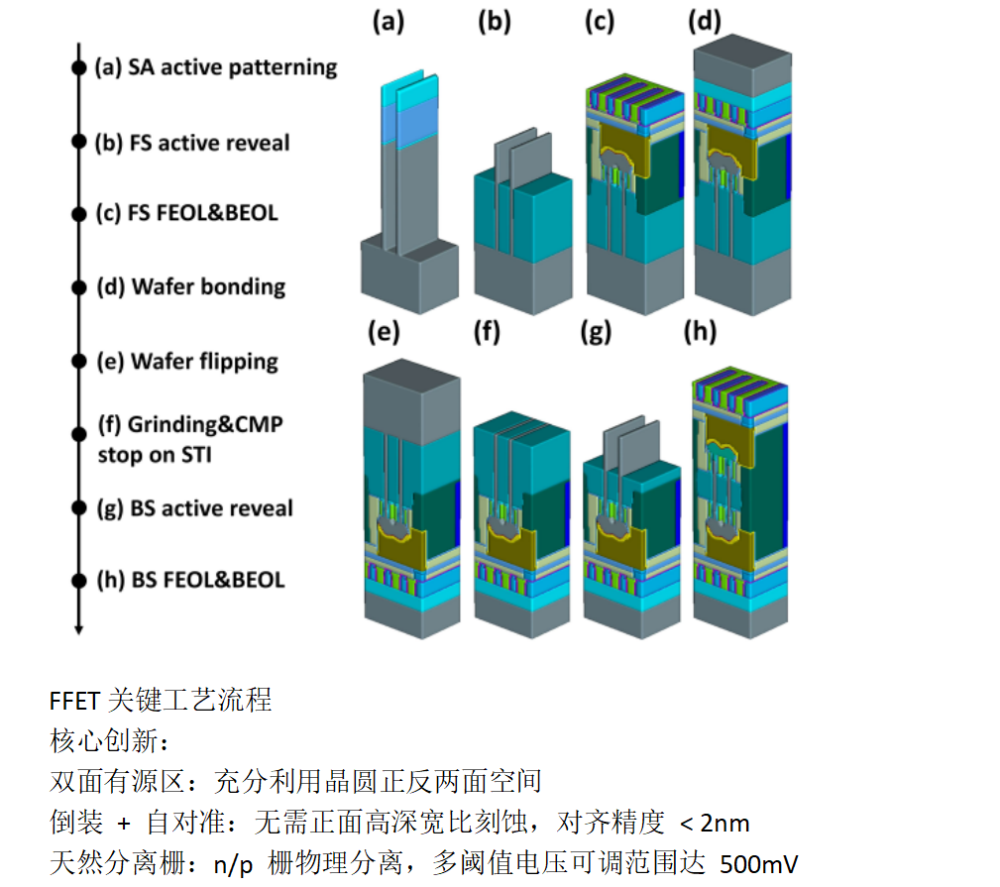

3nm及以下技术节点器件架构评估报告
GAA、CFET与FFET技术对比分析
摘要
本报告针对3nm及以下技术节点传统硅基CMOS面临的物理极限挑战，系统评估了栅极环绕（GAA）、互补场效应晶体管（CFET）和翻转场效应晶体管（FFET）三类主流技术方案。通过对比分析技术原理、关键尺寸、电学性能及电路级影响，结合工艺复杂度、成本与风险，推荐采用FFET融合方案，结合MDI隔离及两次翻转技术作为2nm-1.4nm节点唯一主力器件路线。该方案通过中间介质隔离（MDI）将正反面阈值电压漂移从135mV压制至0.12mV，电路延迟波动<0.6%；两次翻转（Double Flips）工艺解决热损伤与金属污染，工艺难度低于CFET且可复用现有GAA产线；双面DTCO实现2.5T超紧凑标准单元，芯片面积比CFET小25%-31%，频率提升21.5%，功耗降低45%，综合性能、密度、成本与风险管控全面优于竞品，具备快速量产条件。
一、引言
随着摩尔定律逼近物理极限，传统平面晶体管和FinFET技术在3nm及以下节点面临着短沟道效应加剧、漏电增加、性能提升放缓等严峻挑战。为了延续摩尔定律，业界和学术界提出了多种新型器件架构，主要包括栅极环绕(GAA)技术、互补场效应晶体管(CFET)和翻转场效应晶体管(FFET)。本文将系统评估这些技术的原理、优势、挑战及最新研究进展，并对未来发展趋势进行展望。
图一 技术性能对比图

不同器件架构的性能与密度对比
二、传统GAA技术：3nm节点的主流选择
2.1 技术原理与结构
随着FinFET技术在5nm节点以下面临严重的短沟道效应和漏电问题，栅极对沟道的静电控制能力不足，无法满足持续的性能和功耗缩放要求。Gate-All-Around(GAA)全环绕栅极技术应运而生，成为3nm及以下节点的主流器件架构。
GAA技术通过将栅极完全包裹在沟道四周，实现了对沟道的全方位静电控制，从根本上解决了FinFET在超短沟道下的漏电问题，同时显著降低了亚阈值摆幅(SS)和漏致势垒降低(DIBL)效应，允许进一步缩小栅极长度和器件尺寸，降低了功耗并提高了器件的电流驱动能力和开关速度。
图二 GAAFET关键工艺流程

多桥沟道FET(MBCFET)的制备流程
2.2 研究进展
2.2.1 三星MBCFET技术
三星是全球首家量产3nm GAA技术的厂商，其技术方案称为Multi-Bridge-Channel FET(MBCFET)。MBCFET的栅结构采用水平堆叠的纳米片(Nanosheet)结构，即栅极完全包裹每一层纳米片沟道，使用高k金属栅(HKMG)堆叠结构，支持多阈值电压(RVT、LVT、SLVT)设计。对于漏源结构，采用外延生长的抬升源漏结构，同时使用自对准接触(SAC)技术，有效降低了源漏接触电阻。
2.2.2 英特尔RibbonFET技术(2024年量产)
英特尔的3nm GAA技术称为RibbonFET，采用纳米带(Nanoribbon)结构。栅结构采用水平堆叠的纳米带结构，宽度可独立调节。环绕式金属栅极采用HKMG工艺，并引入背面电源传输技术。沟道材料初期使用硅沟道，计划在后续节点引入高迁移率材料(如Ge和III-V族)。
2.2.3 台积电Nanosheet技术
台积电的3nm GAA技术称为Nanosheet，计划于2025年量产。栅结构采用水平堆叠的纳米片结构以及环绕式高k金属栅极，支持不同宽度的纳米片设计，满足不同性能需求。沟道材料初期使用硅沟道，后续将引入SiGe和Ge沟道，提升PMOS性能。
2.3 性能优势
在电学性能上，GAA凭借四周包裹的栅极结构显著优化了静电控制，实现更优的短沟道控制，使亚阈值摆幅（SS）稳定在60–78 mV/dec的理想范围，为电源电压从0.7V缓降至0.6V创造了条件。在3nm节点MBCFET的SS约为78.7mV/dec，与FinFET相当但在更小尺寸下优势更明显。
2.4 面临的挑战
- 制造工艺复杂：需要精确控制纳米片的厚度、均匀性和释放工艺
- 寄生电阻和电容增加：随着器件尺寸缩小，源漏接触电阻成为限制性能的主要因素
- 自热效应严重：多层堆叠的纳米片结构散热困难
- 集成难度大：需要解决多层堆叠、源漏外延、金属栅填充等多个关键工艺
三、CFET技术：2nm及以下节点的有力竞争者
3.1 技术原理与结构
互补场效应晶体管(CFET)是一种垂直堆叠的晶体管架构，将n型和p型晶体管垂直堆叠在同一位置，共享同一个栅极。这种结构可以将晶体管密度提高一倍，是2nm及以下节点最有前途的技术之一。
CFET主要有两种实现方式：单片集成CFET(Mono-CFET)是在同一晶圆上依次制造底部和顶部晶体管，具有自对准的优点，N/P栅极集成更紧密、无热预算限制、晶圆成本更低，是2nm主流方案。顺序集成CFET(Seq-CFET)则是先在两个晶圆上分别制造晶体管，然后通过晶圆键合将它们堆叠在一起，需层转移和晶圆键合，存在对准误差问题。
图三 3nm节点CFET的三维示意图

CFET垂直堆叠结构与截面参数
3.2 单片CFET标准工艺流程
体硅衬底→反型掺杂形成隔离结→Si/SiGe外延堆叠→鳍图形化→埋入电源轨（BPR）→伪栅工艺→源漏选择性刻蚀→内间隔层制备→底部/顶部源漏外延→高纵宽比垂直接触→金属栅替换。
3.3 性能优势
根据韩国大学2022年的研究，在3nm节点，CFET相比标准CMOS具有以下优势：
- 面积减少约55%：由于n/p晶体管垂直堆叠，大大节省了芯片面积
- 有效电容(Ceff)降低约4.5%：栅极边缘电场重叠和n/pFET之间的过孔间距缩短
- 等功耗下频率提高约2.3%：更低的有效电容弥补了电阻的增加
- 等频率下功耗降低约7.3%：更低的有效电容直接降低了动态功耗
3.4 面临的挑战
- 高纵横比(HAR)工艺挑战：Mono-CFET需要制造非常高的栅极和深沟槽中的源漏外延
- 热管理问题：垂直堆叠限制散热，nFET热阻更高、晶格温度更高
- 阈值电压变异：P型器件因共享栅极与额外的功函数层，阈值电压变异较大
- 接触电阻问题：底部晶体管的源漏接触需要在深沟槽中形成，增加了接触电阻
四、FFET技术：一种创新的3D堆叠方案
4.1 技术原理与结构
翻转场效应晶体管(FFET)是北京大学团队于2024年首次提出并实验验证的一种新型3D堆叠晶体管架构。它采用背靠背堆叠的方式，将n型和p型晶体管分别制造在晶圆的正面和背面，共享同一个有源硅区。
核心创新
- 双面有源区：充分利用晶圆正反两面空间
- 倒装+自对准：无需正面高深宽比刻蚀，对齐精度<2nm
- 天然分离栅：n/p栅物理分离，多阈值电压可调范围达500mV
图四 FFET结构示意图
图五 FFET关键工艺流程

4.2 性能优势
FFET避免了CFET中高纵横比的垂直刻蚀和深沟槽工艺。北京大学的研究表明，FFET在dummy gate刻蚀、p型外延生长和底部源漏接触形成等关键步骤的纵横比都远低于Mono-CFET。正面和背面的有源区是同时刻蚀的，实现了完美的自对准，避免了顺序CFET的对准误差问题。
4.3 面临的挑战与解决方案
4.3.1 几何形貌修复
背面（BS）鳍形貌修复：高深宽比（HAR）刻蚀导致翻转减薄后暴露的背面鳍片常呈倒梯形，易引发栅极金属填充阴影与器件参数漂移。Peng等提出通过STI等向回刻结合循环氧化-刻蚀工艺，将背面鳍片的顶角与关键尺寸（CD）收敛至可控范围，确保正反面器件性能匹配。
4.3.2 静电耦合问题
由于FFET的正面和背面晶体管共享同一个有源硅区，它们之间存在严重的静电耦合。在最坏情况下，Bulk FFET的阈值电压(Vth)偏移高达135mV(@Vdd=0.8V)。为了解决这一问题，研究人员提出了中间介质隔离(MDI)技术：通过在正背面之间预埋并置换牺牲SiGe层，物理切断Subfin的半导体导电通路。低κ MDI可将ΔVth压制在≤0.85 mV，电路延迟波动降至<0.6%。
4.3.3 热预算与金属污染问题
在传统的单次翻转FFET工艺中，正面晶体管先制造完成，然后进行背面晶体管的高温工艺，这会对正面晶体管造成热损伤和金属污染。为了解决这一问题，研究人员提出了两次翻转工艺：先在正面完成源漏外延，然后第一次翻转制造背面的完整器件，第二次翻转完成正面的剩余工艺。
五、结论
3nm及以下技术节点的器件技术正处于从平面和FinFET向3D堆叠架构转型的关键时期。GAA技术作为当前的主流选择，已经实现了量产，但在进一步缩小时面临着自热效应和工艺复杂度等挑战。CFET和FFET作为下一代3D堆叠技术，都具有将晶体管密度提高一倍的潜力。
CFET技术研究起步较早，得到了IMEC、英特尔和三星等机构的大力支持，但面临着极高的工艺复杂度和热预算问题。FFET作为一种创新的背靠背堆叠方案，由北京大学团队于2024年首次提出，具有工艺复杂度低、自对准、散热好等显著优势，并且通过MDI技术和多次翻转工艺成功解决了静电耦合和热预算问题。
综合来看，FFET技术在工艺可行性和性能方面都表现出了巨大的潜力，有望成为2nm及以下节点的主流器件技术之一。
六、研发计划
6.1 重点工作
- MDI工艺验证：在300mm晶圆上实现低κ MDI集成，优化SiGe牺牲层刻蚀与介质填充均匀性，目标ΔVth≤0.85mV。
- Double Flips产线适配：改造现有GAA产线，开发键合/解键合模块，验证W/Ru背面BEOL金属可靠性，完成5次循环热预算测试。
- 双面DTCO库开发：与EDA厂商合作，构建支持2.5T单元的FFET标准单元库，包含4种引脚风格（PBal/PFront/PBack/PBal-swap）。
FFET融合方案核心优势
6.2 可能难点与对策
| 难点 | 对策 |
|---|---|
| MDI界面态导致迁移率退化 | 优化界面钝化工艺，采用低温退火降低缺陷密度 |
| 翻转工艺良率损失 | 建立工艺窗口DOE，控制键合强度（>2.2J/m²）与减薄均匀性（±5nm） |
| EDA工具不支持双面布线 | 同步开发FFET PDK，提供物理设计规则（DRC/LVS）与寄生参数模型 |
综合评估表明，FFET融合方案（MDI+Double Flips+双面DTCO）在工艺可行性、性能密度与成本控制上全面优于GAA与CFET，无致命技术缺陷，可作为2nm-1.4nm节点唯一主力路线。建议优先推进MDI工艺与Double Flips产线适配，同步开发EDA生态，预计12个月内完成技术验证，18个月导入量产。
参考文献
- IEEE International Roadmap Committee, "International Roadmap for Devices and Systems: 2024 Update – More Moore," IEEE, Piscataway, NJ, USA, 2024.
- Kim et al., "Reliability Assessment of 3nm GAA Logic Technology Featuring Multi-Bridge-Channel FETs," 2023 IEEE International Reliability Physics Symposium (IRPS), Monterey, CA, USA, 2023, pp. 1-8.
- X. Yang et al., "Impact of Process Variation on Nanosheet Gate-All-Around Complementary FET (CFET)," in IEEE Transactions on Electron Devices, vol. 69, no. 7, pp. 4029-4036, July 2022.
- J. Ajayan, V. B. Sreenivasulu, A. K. Dwivedi and S. Tayal, "Complementary Field Effect Transistor (CFET) for the 2-nm Technology Node: A Review From Device to Circuit Perspectives," in IEEE Journal of the Electron Devices Society, vol. 14, pp. 58-69.
- S. Subramanian et al., "First monolithic integration of 3D complementary FET (CFET) on 300mm wafers," in Proc. IEEE Symp. VLSI Technol., Honolulu, HI, USA, 2020, pp. 1–2.
- T. -Z. Hong et al., "First demonstration of heterogenous complementary FETs utilizing low-temperature (200°C) hetero-layers bonding technique (LT-HBT)," in Proc. IEEE Int. Electron Devices Meeting (IEDM), San Francisco, CA, USA, 2020, pp. 15.5.1–15.5.4.
- S. -G. Jung, D. Jang, S. -J. Min, E. Park and H. -Y. Yu, Device Design Guidelines of 3-nm Node Complementary FET (CFET) in Perspective of Electrothermal Characteristics, in IEEE Access, vol. 10, pp. 41112-41118, 2022.
- H. Lu et al., "First experimental demonstration of self-aligned flip FET (FFET): A breakthrough stacked transistor technology with 2.5T design, dual-side active and interconnects," in Proc. IEEE Symp. VLSI Technol. Circuits (VLSI Technol. Circuits), Honolulu, HI, USA, Jun. 2024, pp. 1–2.
- J. Sun et al., "Understanding of the Electrostatic Coupling in Flip FET (FFET) and Corresponding Strategies," in IEEE Transactions on Electron Devices, vol. 72, no. 3, pp. 971-978, March 2025.
- W. Peng et al., "Process Development and Optimization of Flip FET (FFET) for Stacked Transistors Technology," in IEEE Transactions on Electron Devices, vol. 72, no. 11, pp. 5851-5859, Nov. 2025.